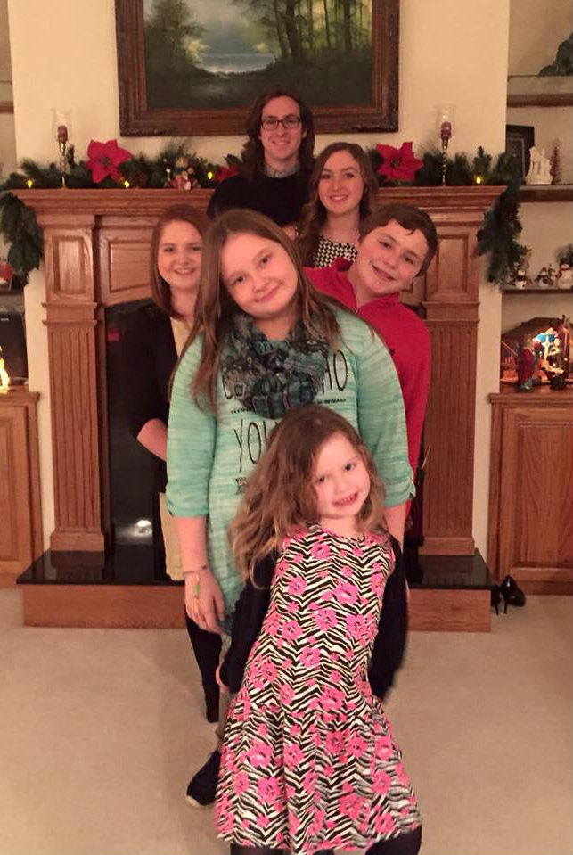
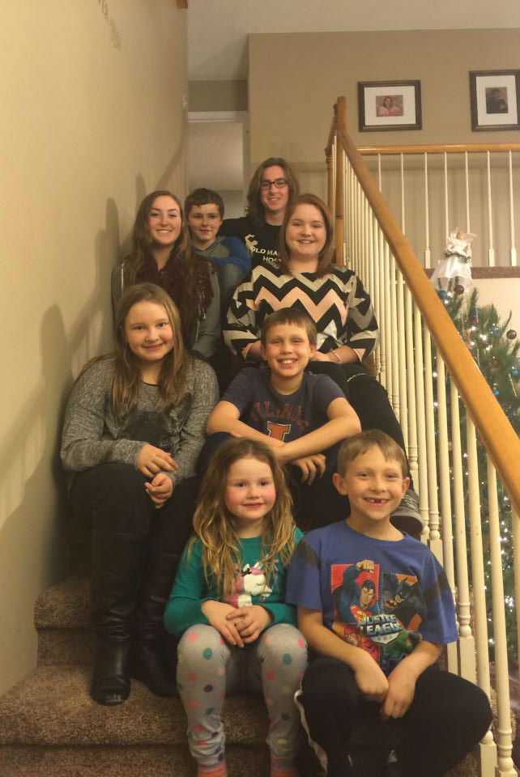
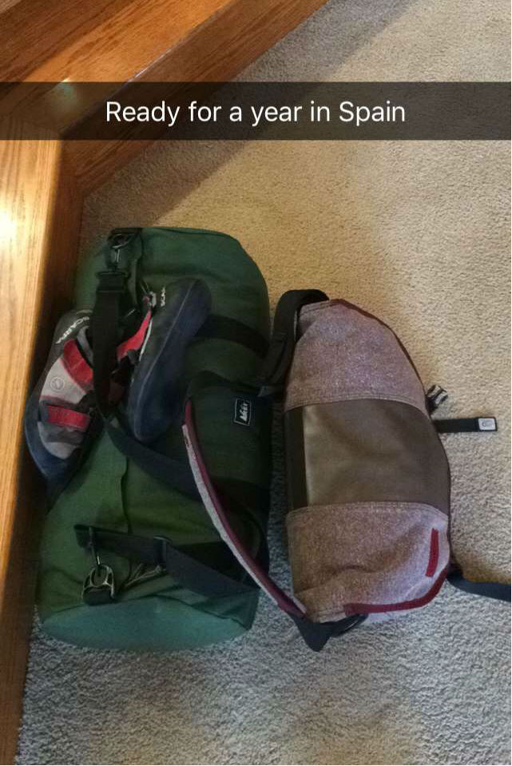

Pre-Departure
I am currently one month into my year in Spain. For those of you unfamiliar with the particulars of my trip, I will be studying in Madrid at Universidad Carlos III (UC3M) for the Spring 2016 semester (January - May 2016). Following this, I will move over to Barcelona and begin an internship at Hewlett-Packard for the Summer and Fall 2016 semesters (June - December 2016). Obviously, I am a little late in getting this blog started, but I will try to catch up and write about my past month in Europe quickly. I will also include any and all photos I was able to take during my time. I would like to say a few words in this initial post about my preparation for this experience and the days leading up to my trip.
The first step in getting to Spain was to apply for a visa. This mostly went off smoothly barring a hiccup or two. That hiccup being the fact that I applied for a six month visa initially only to hear back from HP about getting the internship. While this was great news, I then had to reapply for a year long visa. It was an inconvenience that meant a 5 AM departure for chicago on a weekday, but otherwise wasn't a huge problem.
So I got a visa (or two). And was ready to head to Spain. I had already done the application for UC3M and gotten accepted, so I was all set on that front. Really, the only thing standing between me and Spain was a week of finals, a duffel bag's worth of packing, and time. I was ready. My final few weeks at home during the holidays were spent with family and friends doing nothing in particular.
I set a departure date for January 1st at 11:45 am. I decided to take the scenic route to Spain when my friends (Alden, Tommy, Kristy, and Christine) and I chose to take a 10-day-long trip that would take us to London, Paris, Geneva, and Marseille before landing us in Spain. I honestly felt no anxiety leading up to the trip, and that can probably be traced to blinding excitement and youthful exuberance.
I spent a good holiday with family and friends and really tried to make good use of what little time I had left at home. I spent a lot of time catching up with high school friends and visiting family. I was so busy trying to see everyone before I left that I continued to put off packing until the day before. Packing was a bit of an adventure but certainly made easier by the fact that I decide to only take what I could carry onto the airplane. So I spent the New Year with friends and family, slept a few hours (this was by design, part of a half-baked plan to avoid jet lag), and left early on the first to catch my flight to London. Spending New Year's Day on a commute across the Atlantic wasn't ideal, but I was excited to get started.
Below are a few photos; two of me with my cousins during the holidays and a photo of my luggage.
  {kind=link}
{kind=link}
{kind=link}
P.S. My plan to avoid jet lag by staying up late did not work.